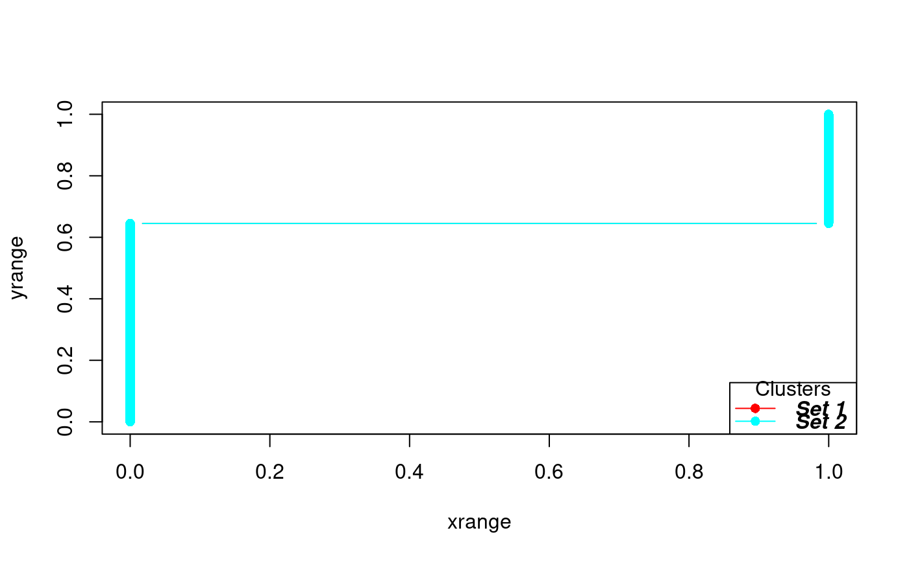
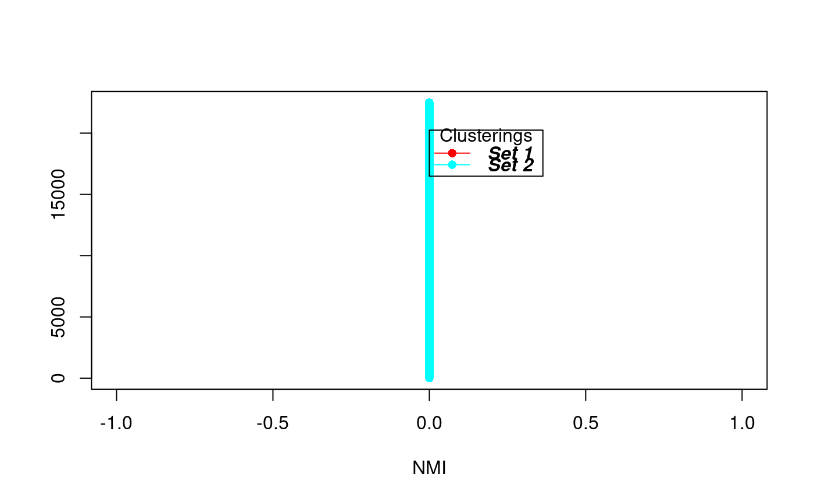

get_auc_similarity_scores.RdMethods for evaluating the consensus between sets of clusterings, usually in the context of subsetting of the data or different numbers of clusters.
plot_cdf_consensus(labels) get_auc_similarity_scores(labels, method = c("consensus", "nmi")) plot_model_explorer(labels, colors = rainbow(length(labels)))
| labels | a list. Each element of
the list is a matrix that gives the results of a clustering routine in each
column (see |
|---|---|
| method | method for calculation of similarity for the AUC measure, one of "consensus" or "nmi". See details. |
| colors | a vector of colors, of length equal to the length of
|
plot_cdf_consensus invisibily returns list of the upper
triangle values, with the list of same length as that of labels.
get_auc_similarity_scores returns a vector, equal to length
of the list labels, giving the AUC value for each element of
labels.
This function is a plotting function does not return anything
For each element of the list labels,
plot_cdf_consensus calculates the consensus between the clusterings
in the matrix, i.e. the number of times that pairs of rows are in the same
cluster for different clusterings (columns) of the matrix using the
consensus_matrix function. Then the set of values (the N(N-1)
values in the upper triangle of the matrix), are converted into a cdf
function and plotted.
For each set of clusterings given by labels (i.e. for each
matrix M which is an element of the list labels)
get_auc_similarity_scores calculates a pairwise measure of
similarity between the columns of M. These pairwise scores are
plotted against their rank, and the final AUC measure is the area under
this curve.
For method "consensus", the pairwise measure is given by calculating
the consensus matrix using consensus_matrix with
scale=FALSE. The consensus matrix is divided by the max of M.
For method "nmi", the pairwise value is the NMI value between each
pair of columns of the matrix of clusterings using the
NMI function.
consensus_matrix, NMI,
plot_cdf_consensus
data(exampleData) moanin = create_moanin_model(data=testData,meta=testMeta) #small function to run splines_kmeans on subsample of 50 genes subsampleCluster<-function(){ ind<-sample(1:nrow(moanin),size=50) km<-splines_kmeans(moanin[ind,],n_clusters=3) assign<-splines_kmeans_score_and_label(moanin, km, proportion_genes_to_label=1.0)$label } kmClusters1=replicate(10,subsampleCluster()) kmClusters2=replicate(10,subsampleCluster()) # Note, because of the small number of replicates (10), # these plots are not representative of what to expect. out<-plot_cdf_consensus(labels=list(kmClusters1,kmClusters2))#> [1] 0.6450942 0.6450942